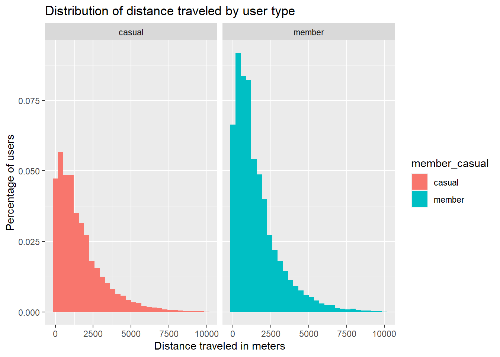
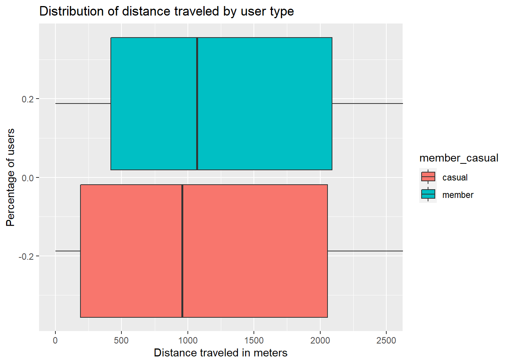
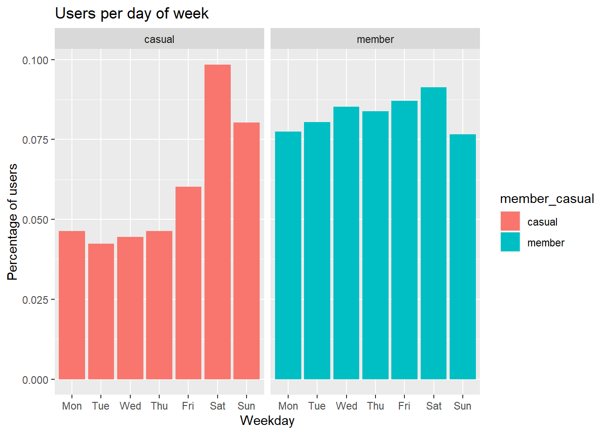

Analysis
This data analytics report is one the Capstone Exercises for the Google Data Analytics Course on Coursera. This case study is about a bike-sharing company that aims to increase the number of annual members (subscribers) as these type of members are the most profitable for the company.
Information about the company:
- 5800 bikes
- 600 docking stations
- different types of bikes:
- traditional bikes
- reclining bikes
- hand tricycles
- cargo bikes
- 92% of members use traditional bikes
- 8% of members use the other types of bikes
- 70% of members use bikes for leisure
- 30% of members use bikes for commuting
The task is to answer the first question of the new marketing program:
How do annual members and casual riders use Cyclistic bikes differently?
How many users have a membership status?
To answer this question we need to first group the data by each member type and then calculate some basic descriptive statistics:

In this graph we can see that almost 60% of our users have a membership status.
What is the most used type of bike?

Both types of users use the docked bike the most but, the member users use
the classic bike more than the electrict bike. The casual users prefer
the electric bike over the classic bike.
For how long do our users travel?


The average casual user spends twice more of the time of a member during a
trip - 20 minutes versus 11 minutes. And the trip duration is more spread out
among casual members. This should be the case of the majority of the users
using bikes for leisure trips as indicated in the basic information.
How far do our users travel?
Although the distance calculated through the latitude and longitude isn't the most accurate representation of the distance traveled as trips may not be in a straight line, it is the only representation that we currently have.


The average casual and member users travel about the same distance,
however, the member users' shorter trips are longer than the casual users'.
When do our users travel?

In this graph we notice that member users most probably use our bikes for
commuting during the week as oposed to casual members who use our bikes more
at weekends.
How many users do we have through the year?


It is very difficult to draw conclusions from this graph for the simple fact that this is not a normal year as the world was affected by COVID-19 and COVID-19 also has trends. However, we can clearly see a trend in users over the year so that in the summer there are more users than in the rest of year.